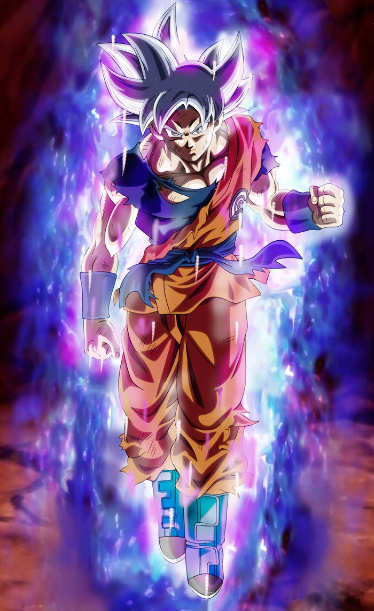

GOKU
Son Goku (Japanese: 孫悟空, Hepburn: Son Gokū) (/ˈɡoʊ.kuː, ɡoʊˈkuː/) is a fictional character and main protagonist of the Dragon Ball manga series created by Akira Toriyama. He is based on Sun Wukong, a main character in the classic Chinese novel Journey to the West. His origin story also shares some similarities with that of Superman.[1] Goku first made his debut in Dragon Ball chapter #1 Bulma and Son Goku (ブルマと孫悟空, Buruma to Son Gokū), originally published in Japan's Weekly Shōnen Jump magazine on June 19, 1984,[2] as an eccentric, monkey-tailed boy who practices martial arts and possesses superhuman strength. He meets Bulma and joins her on a journey to find the wish-granting Dragon Balls. Along the way, he finds new friends who follow him on his journey.Initially believed to have been born on Earth, Goku later learns that he is a member of an extraterrestrial warrior race called the Saiyans, which is also the reason for his superhuman strength, and his birth name is Kakarot (カカロット, Kakarotto). As Goku grows up, he becomes the Earth's mightiest warrior and protects his adopted home planet from those who seek to destroy it. Goku is depicted as carefree and cheerful when at ease, but quickly serious and strategic-minded when in battle and also enthusiastic to fight. He is able to concentrate his Ki and use it for devastatingly powerful energy-based attacks; the most prominent being his signature Kamehameha (かめはめ波), in which Goku launches a blue energy blast from his palms. Also pure of heart, Goku has frequently granted mercy to his enemies, which has often earned him additional allies in the process (though has also resulted in others taking advantage of his kindness), and he is one of the few who can ride the magic cloud called Kinto'un (筋斗雲, lit. "Somersault Cloud", renamed "Flying Nimbus" in Funimation's dub); which was another element adapted from Journey to the West.[3]
As the protagonist, Goku appears in most of the episodes, films, television specials and OVAs of the manga's anime adaptations (Dragon Ball, Dragon Ball Z, Dragon Ball GT, Dragon Ball Super and Dragon Ball Heroes) as well as many of the franchise's video games. Due to the series' international popularity, Goku has become one of the most recognizable and iconic characters in the world. Outside the Dragon Ball franchise, Goku has made cameo appearances in Toriyama's self-parody series Neko Majin Z, has been the subject of other parodies, and has appeared in special events. Most Western audiences were introduced to the adult version of Goku appearing in the Dragon Ball Z anime, itself an adaptation of Dragon Ball manga volumes 17-42, as opposed to his initial child form, due to the limited success of the first series overseas.[4] Goku's critical reception has been largely positive and he is often considered to be one of the greatest manga and anime characters of all time.
Goku first appears in Dragon Ball as a monkey-tailed child adopted by the hermit Gohan. Before the series' narrative begins, he accidentally and unknowingly kills Gohan on a full-moon night when he temporarily transforms into the mighty Ōzaru after staring at a full moon. However, Goku loses the ability when his friends cut off his tail.[35] Living alone with an item known as a Dragon Ball which he keeps as a memento of Gohan, Goku befriends a teenage girl named Bulma. He joins her to find the seven Dragon Balls, which, when gathered, summon the wish-granting dragon Shenron. They encounter the desert bandit Yamcha and two shapeshifters named Oolong and Puar, who also join their quest. Goku is later trained by the martial artist Master Roshi, alongside a Shaolin monk named Krillin, who becomes his best friend. It is Roshi who gives Goku the Nimbus cloud (as a reward for saving his pet sea turtle), which becomes Goku's primary source of flight travel across the world. Goku's first shown martial arts attack as a child is Jan ken (ジャン拳), three physical blows modeled after the hand signs in rock-paper-scissors.[36] As a child, he also wields the Nyoi-bō (如意棒, lit. "Mind Stick", renamed "Power Pole" in Funimation's dub), a magic staff that extends and retracts on command; given to him by his late grandfather.[37] However, Goku's signature attack is the Kamehameha, which he learned from Master Roshi.[38] The Kamehameha is a concentration of Ki, released as a concussive beam. Roshi spent about 50 years developing and perfecting the technique, but, as a child, Goku is able to understand and copy the technique immediately after only one demonstration. After training with the Earth's god, Kami, Goku learns to fly by virtue of the technique Bukū-jutsu (舞空術, lit. "Air Dance Technique") and uses the Nimbus less frequently for flight travel. While participating in the World Martial Arts Tournament that attracts the most powerful fighters in the world, Goku battles foes, later turned allies, such as Tien Shinhan and Chiaotzu, as well as the Namekian Piccolo. After becoming the runner-up champion of the 21st and 22nd tournaments, Goku finally wins in the 23rd with Piccolo's defeat, and marries Chi-Chi soon after to fulfill a promise he made to her years ago despite not knowing what marriage was back then.
FORMS OF GOKU
- SUPER SAIYANS

- SUPER SAIYANS 2

- SUPER SAIYAN 3

- SUPER SAIYAN GOD

- SUPER SAIYAN BLUE

- AUtONOMOUS ULTRA INSTINCT

vegita
Vegeta (ベジータ Bejīta), more specifically Vegeta IV (ベジータ四世 Bejīta Yonsei)[5], recognized as Prince Vegeta (ベジータ王子 Bejīta Ōji) is the prince of the fallen Saiyan race and one of the major characters of the Dragon Ball series.Regal, egotistical, and full of pride, Vegeta was once a ruthless, cold-blooded warrior and outright killer,[6] but later abandons his role in the Frieza Force, instead opting to remain and live on Earth. His character evolves from villain, to anti-hero, then to hero through the course of the series, repeatedly fighting alongside the universe's most powerful warriors in order to protect his new home and surpass Goku in power
Vegeta is a slim yet very well-built man of a below-average stature, standing at 164 centimeters tall. His hair is black (or dark brown, depending on the media) and spikes upwards. Vegeta has a prominent widow's peak. Like most Saiyans, he possesses defined eyes with a consistently stern look to them. Like other Universe 7 Saiyans, he was born with a prehensile brown-furred tail, until it was permanently (despite him stating it would grow back eventually) cut off by Yajirobe.Over the course of the series, Vegeta's physical appearance changes. While originally appearing very short and lean, especially compared to his massive partner, Nappa, he later seems to be somewhat taller and noticeably more muscular. His hair and forehead appears to be shorter and his facial features, which are perpetually in a scowl, also look more distinct and sharply defined as the series progresses, making him look much older in later sagas compared to what he looked like in his debut.
A major characteristic of Vegeta's is the fact that he is one of the only Saiyans who have continued to don the traditional Saiyan armor in combat. His general look is a dark blue, full-bodied jumpsuit with white gloves and boots with the said armor on top. He has also been seen wearing alternate forms of the armor, customizing the armor to better suit his persona. When first arriving on Earth, he wore a white armor with yellow shoulder pads and also padding at his hips and nether-region. Along with it, he wore a red-lens scouter on his left eye. During the Frieza Saga , he replaced his heavily damaged armor with a similar one, minus the padding around his waistline. He also briefly wore another scouter until deeming it unnecessary and destroying it. When his armor was damaged against Recoome , he replaced his outfit with an older model design consisting of a black bodysuit, white gloves and boots, and a near-purely white armor without shoulder pads. In the Trunks saga, he wore a pink short sleeved loose button shirt with the sign "Bad Man" at the back, a white sleeveless undershirt, yellow pants and green shoes with a brown trim. During the Androids Saga, he wore an updated version of his original armor, but without pads. During the Buu Saga, to be allowed to fight Goku in the World Martial Arts Tournament, Vegeta fought without armor, only wearing a a sleeveless blue bodysuit. He later wore this outfit during his sparring match against Goku in Dragon Ball Super: Broly as the color of his bodysuit is blue gray/navy blue.Originally in the Dragon Ball Z anime, Vegeta appeared with a totally different color scheme from his usual one, having red hair and a battle armor consisting of a green khaki chest piece and burnt orange guard pieces, orange gloves, a navy blue jumpsuit, and his boots with orange tops and brown footings to them.
forms of vegita
- SUPER SAIYANS

- SUPER SAIYANS 2

- SUPER SAIYAN 3

- SUPER SAIYAN GOD

- SUPER SAIYAN BLUE

frieza
Frieza (フリーザ Furīza) is the emperor of Universe 7, who controlled his own imperial army and is feared for his ruthlessness and power. He is the descendant of Chilled, the second son of King Cold, the younger brother of Cooler, and the father of Kuriza. Frieza is the catalyst antagonist of the entire franchise, as it is his actions that led to Goku arriving on Earth. He has made several comebacks since his fight with Goku on Namek, including multiple invasions of Earth. Recently, he has been chosen to represent Universe 7 as the tenth member of Team Universe 7 for the Tournament of Power as a replacement for Good Buu. This makes him the most recurring villain of the Dragon Ball series. After the events of the Tournament of Power, he is revived and recovers his title as Emperor of Universe 7.Frieza is the main antagonist of the Namek, Frieza, Trunks, Gods of the Universe, and Golden Frieza Sagas. He is also the main antagonist of the Dragon Ball Z: Bardock - The Father of Goku special and Dragon Ball Z: Resurrection ‘F’ film. He later serves as a villainous protagonist in the Universe Survival Saga and secondary antagonist in the Broly Saga.
According to Akira Toriyama, Frieza's design is an amalgamation of what he thought monsters looked like in his childhood.[citation needed] According to the Daizenshuu, Frieza was also inspired by Toriyama's second editor, Yū Kondō. According to Daizenshuu 2, Toriyama was also inspired to create Frieza due to the events of the Japanese economic bubble that had occurred at the time he was writing the Saiyan Saga, with Frieza specifically being based on real estate speculators, which Toriyama claimed were "the worst sort of people".[6] Frieza is one of the villains in the series who possesses an entire range of transformations, each one being quite different than the others. It is implied by Vegeta and Frieza himself in the series that Frieza's fourth, most powerful form is actually his original form, with the other three being forms that suppress and conserve his enormous power. Frieza later confirms this while fighting the main protagonist, Goku. His forms seem to revolve around both western and Japanese concepts of demons. According to an interview done by Shonen Jump with Toriyama, Frieza's final form was purposefully made to look small and less menacing: Toriyama wanted to go against the expectation that villains and monsters become bigger and meaner looking the stronger they are.[citation needed] In his first form, Frieza usually wears battle armor with a purple chest plate. When in his true natural form and also his golden form, Frieza wears his race's ultimate Bio Suit, the Z Fighting Suit. When in his Mecha form, his body is equipped with a permanent Cosmic Suit. In the Universe Survival Saga, he has a halo on his head due to being dead, although this is removed after the tournament due to Whis restoring his life for "good behavior".